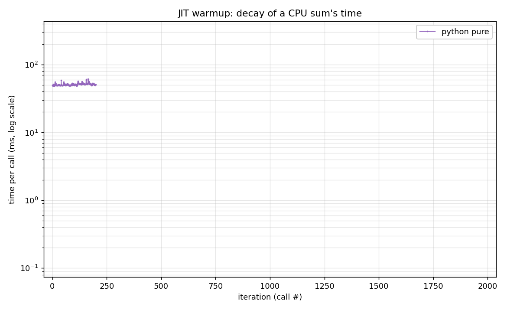
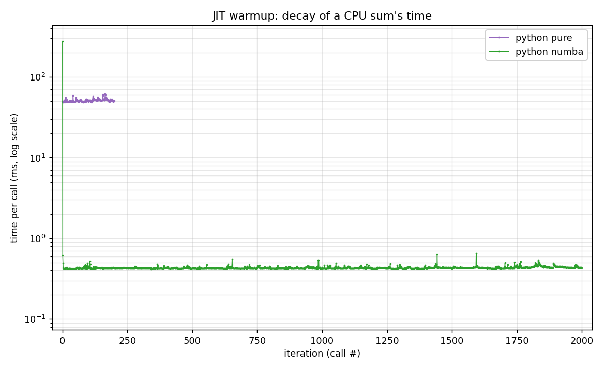
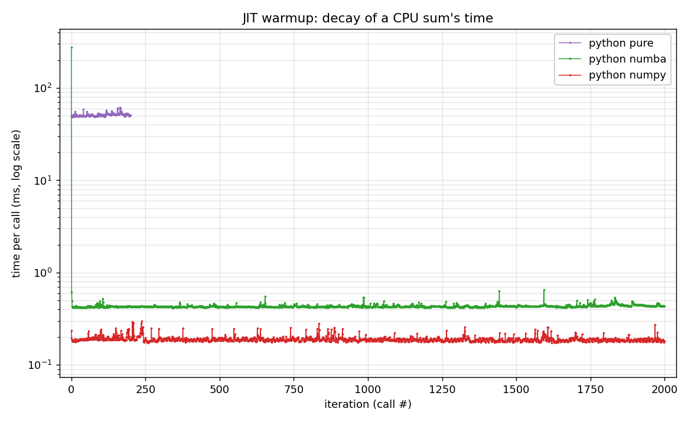
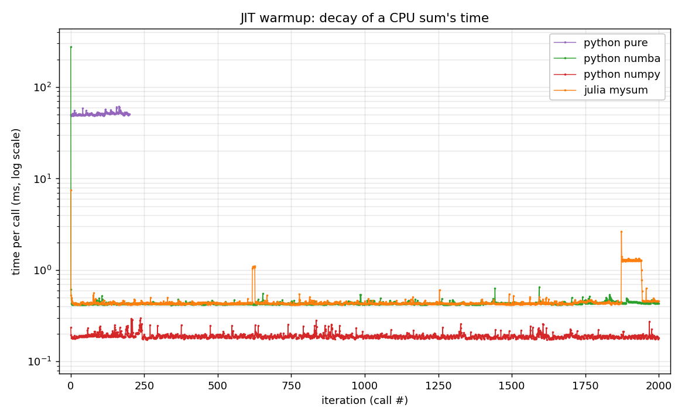
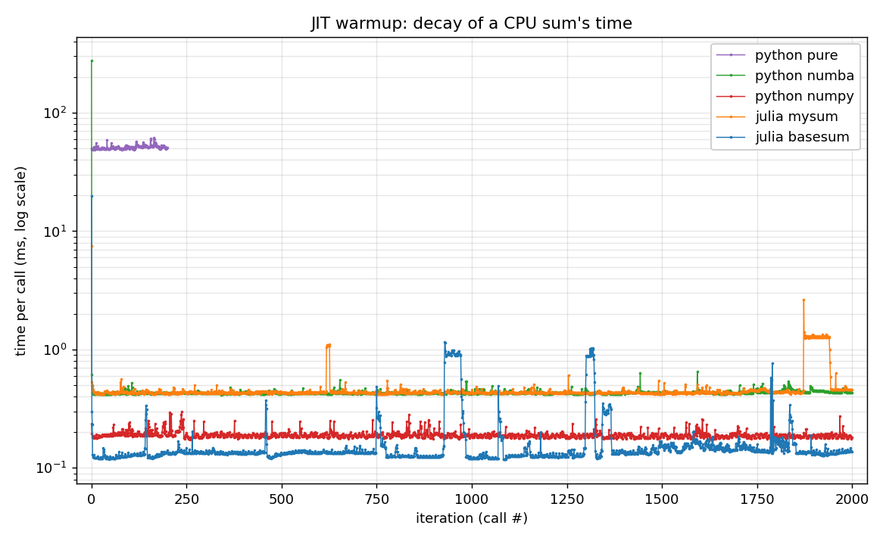

1 — Interpreted vs compiled
Measure first: what a loop costs, and which block is worth your time
Today’s path
- The JIT warmup: why the first call is slow. ✏️ A1
- Measuring properly: the measurement card.
- π, measured: what “correct” means when the result is random.
- Which block is worth it? ✏️ A2
Only if time: the compiler · why
sumbeats our loop
By the end, you can
- separate compile time from run time;
- write down a valid measurement;
- say which block deserves the effort.
The JIT warmup
Speed bolted on, or built in?
The loop we will study
The experiment
- Sum 10⁶ floats, 2000 calls, time each call
- 5 variants: pure Python,
numba @njit,numpy, Juliamysum, Juliasum
Bet first: rank the five. What happens on the very first call?
Warmup: the curves appear







Reading the curves
| variant | 1st call | later calls |
|---|---|---|
| pure Python | no spike | ~50 ms |
numba @njit |
~270 ms | ~0.4 ms |
| numpy | no spike | ~0.2 ms |
Julia mysum |
~7 ms | ~0.4 ms |
Julia sum |
~20 ms | ~0.1 ms |
Two numbers per variant: first call, steady state.
Three ways to run code
- Interpreted (CPython): each operation decoded again, every time → instant start, slow
- AOT (C,
numpyinternals): compiled before you run → fast, no warmup - JIT (Julia, numba): compiled on 1st call → fast after
The spike is the JIT compiling. Paid once.
What gets compiled: one version per type
No single “x + y” instruction: it depends on the types.
x, y |
machine code for x + y |
|---|---|
Int, Int |
integer add |
Float64, Float64 |
float add |
Float64, Int |
convert, then float add |
JIT: the 1st call compiles a version for these types, then reuses it.
numpy: fast, but only inside
numpy.sum: the loop is compiled C.
- Python
forover a numpy array: slow again - Python: vectorize — push loops into numpy
- Julia, numba: your own loop is compiled too
✏️ A1 — what does a loop cost?
- Question: same sum: Python loop,
numpy,numba. How far apart? What does the 1st call cost? - Alone: write your ranking and one ratio, before running (2 min).
- In pairs: fill the two functions, check the assertion.
- Write down: first call · steady times · ratios · one sentence explaining the gap.
🐍 Python (Colab) · local .py · Julia · 20 min
A1 — debrief
- Compare: same ratios as your neighbors? If not: N, type, machine?
- Explain: where did the interpreter cost go, in
numpy? innumba? - Test: which measurement separates compiling from running?
A ratio across two machines says nothing about a language.
Measuring properly
Pitfall 1: timing the compiler
Report the 1st call separately; compare steady states.
▶ Script: cell “0. Getting started”, then “2. Measuring properly — compare the two timings”
Pitfall 2: measuring only once
- Many runs, warmup dropped
$vplugs the value in: timemysum, not the global lookup (explained in the dispatch module)- Python:
timeit, orperf_counteraround repeated calls
▶ Script: cell “Read the distribution: why is the minimum the number to quote?”
The measurement card
Every timing, here and in your project, comes with five lines:
| Result | what was checked, and how |
| Input | size and type |
| Machine | hardware, workers, BLAS threads |
| Repetition | warmup, number of runs, statistic |
| Scope | which costs are inside the timer |
No card, no number. Compare ratios on one machine.
Monte-Carlo π, measured
Estimating π
- Time and allocations of
estimate_pi(10_000_000)? - Type-stable?
@code_warntypeshows inferred types, uncertain ones in color - How does the error shrink with
n? Why ideal for parallelism?
▶ Script: cells “3. Monte-Carlo π” to “Q3”
A random result: what does “correct” mean?
- Two runs give two different estimates. Neither equals π.
- Standard error ≈ \(1.64/\sqrt{n}\): about 0.0016 at
n = 10⁶.
Check with a tolerance of a few standard errors, never with
==.
To check the code itself: an input whose count you know exactly.
Which block is worth it?
Local gain ≠ whole-program gain
A block takes a fraction \(f\) of the time and becomes \(s\)× faster:
\[\text{whole-program speedup} = \frac{1}{(1-f) + f/s}\]
Bet first: which one helps more?
- A: 10 % of the time, 10× faster.
- B: 80 % of the time, 2× faster.
✏️ A2 — diagnose before optimizing
- Question: three timed stages. Which one to change? What does the whole job gain?
- Alone: predict the overall gain (3 min).
- In pairs: time the stages, replace one, check the output is unchanged.
- Write down: stage table · local gain · predicted vs observed gain. 📋 card
🐍 Python (Colab) · local .py · 20 min
A2 — debrief
- Compare: predicted vs observed overall gain.
- Explain: A gives 1.10×, B gives 1.67×; even an instantaneous A gives at most 1.11×.
- Test: which stage would you time next?
Your project reports both: gain on the block, gain on the whole program.
What we keep
- First call ≠ steady state: report both.
- A number comes with its card.
- A random result is checked with a tolerance.
- Optimize what dominates; verify on the whole program.
Next: 2 — Multiple dispatch vs OOP ➡ · 🔬
warmup_jit/
Only if time — watching the compiler
Watching the compiler
Try
f(3.0)andf(3). What changes?
▶ Script: cells “4. Optional — type specialization” to “Step 3, with an Int”
Same f, two compilations
Only if time — why sum beats mysum
The gap to explain
10⁵ floats (fits in cache):
| time / call | |
|---|---|
mysum |
44 µs |
Base sum |
7.5 µs |
~6× apart.
@code_nativetells why.
▶ Script: cells “5. Optional — Base
sumvs our loop” to “The kernelsumcalls”
mysum: what to look for
sum: what to look for
@code_native sum(vc) is mostly a call; the work is in Base.mapreduce_impl:
Why not our loop?
Bet first: why can’t the compiler do this for our loop?
What we saw: the order of the additions
Warning
Float + is not associative: (a+b)+c ≠ a+(b+c). The compiler must keep our order → scalar.
sum allows reordering → vectorized.
@simd: permission to reorder
function mysum_simd(x)
s = zero(eltype(x))
@inbounds @simd for i in eachindex(x) # ← @simd
s += x[i]
end
return s
end@inbounds: no bounds checks · @simd: may reorder +
| variant | time / call |
|---|---|
mysum (scalar) |
44 µs |
mysum_simd (vaddpd) |
~4 µs |
Base sum |
7.5 µs |
Not magic: the algorithm (reordering → SIMD), not the language.
🔬 asm,
@simd:sum_vs_size/reflection.jl· ⬅ Back to the path